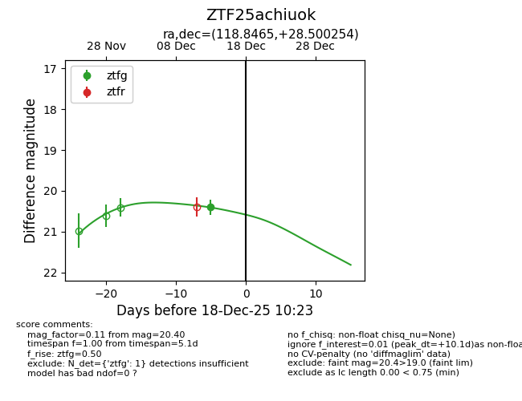
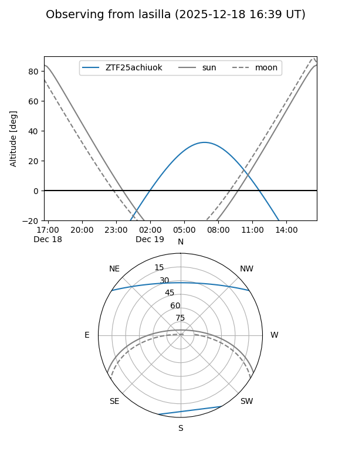
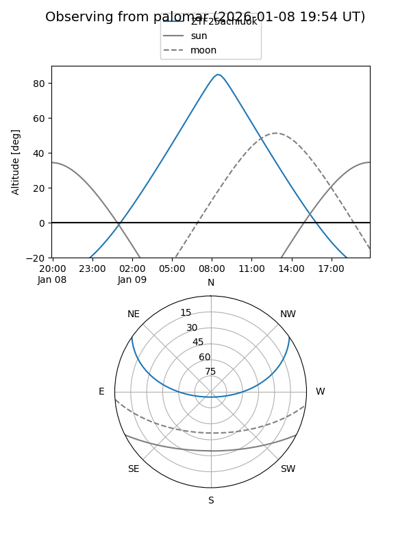

ZTF25achiuok
Target ZTF25achiuok at 2026-01-09 12:49
Aliases and brokers:
FINK: link
Lasair: link
ALeRCE: link
alt names
ZTF25achiuok (ztf,fink_ztf)
Coordinates:
equatorial (ra, dec) = 118.8465,+28.50025
equatorial (HMS+DMS) = 07:55:23.17,+28:30:00.92
galactic (l, b) = (192.5252,+25.65774)
Flags:
Photometry:
last ztfg=20.40
1 ztfg detections
Lightcurve

Visibility


Additional plots